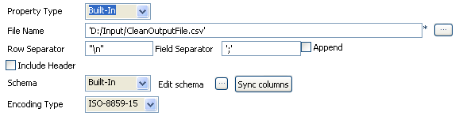

Scenario: multiple replacements and column filtering
This following job (made in Perl) searches and replaces various typos and defects in a csv file then operates a column filtering before producing a new csv file with the final output.

- Click & drop the following components from the Palette: tFileInputDelimited, tReplace, tFilterColumn and tFileOutputDelimited.
- Connect the components using Main Row connections via a right-click on each component.
- Select the tFileInputDelimited component and set the input flow parameters.
- The Property type for this scenario is Built-in. Therefore the following fields are to be set manually unlike the Properties stored centrally in the repository, that are retrieved automatically.
- The File is a simple csv file stored locally. The Row Separator is a carriage return and the Field Separator is a semi-colon. In this example no Header, no Footer and no Limit are to be set.
- The file contains characters such as:
\t, |||, [d]or*dwhich should not be interpreted as special characters or wild card. - The schema for this file is built in also and made of four columns of various types (string or int).
- Now select the tReplace component to set the search & replace parameters.
- The schema can be synchronized with the incoming flow.
- Check the Simple mode box as the search parameters can be easily set without requiring the use of regexp.
- Click the plus sign to add some lines to the parameters table.
- On the first parameter line, select amount as input column. In the search field look for the decimal dot separator and replace it with a comma, in between single quotes.
- On the second parameter line, select str as input column. In the search field, look for stret or streat or stre. Note that these values are separated by a pipe that means
orin Perl language. Replace them by Street. Check the whole word box. - On the third parameter line, select again str as input column, search the pipe character using a backslash in front, to differenciate it from the "or" in Perl language. and replace it with nothing between single quotes (`').
- On the fourth parameter line, select firstname as input column. In the Search field, look for the following characters:
[, ], +, *. Note that these values are separated by a pipe that meansorin Perl language. Replace them with nothing between single quotes (`'). - On the fifth parameter line, select amount as input column. In the Search field, type in the dollar sign between single quotes and In the Replace field, type in the Euro sign.
- On the last parameter line, select firstname as input column. Search the string:
\t. To differenciate it from the tabulation, add as many backslashes in front of it as there are parsing, in other words, two backlashes are used to avoid misinterpreting and two extra backslashes constitute part of the character being looked for. In total four backslahes including the one in the character it self are being searched. Replace them with nothing between single quotes (`'). And check the whole word box. - The advanced mode isn't used in this scenario.
- Select the next component in the job, tFilterColumn.
- The tFilterColumn component holds a schema editor allowing to build the output schema based on the column names of the input schema. In this use case, change the order of the input schema columns and add 3 new columns, to obtain a schema as follows: empty_field, firstname, name, str, amount, filler1, filler2.
- Click OK to validate.
- Set the tFileOutputDelimited properties manually.
- The schema is built-in for this scenario, and comes from the preceding component in the job.
- Save the job and execute it.




The first column is empty and the rest of the columns have been cleaned up from the parasitical characters. The street column was moved. And the decimal delimiter has been changed from a dot to a comma, along with the currency sign.